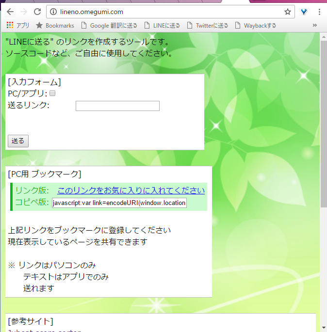

|  |  |
いまや日本の人口の 2人に1人は使っている LINEというアプリに使える、 任意のページをLINEに共有するサイトを作ってみました。
今パソコンで開いているページをスマホに送りたい!
このページをLINEの友達に送りたいけどパソコン版のLINEを開くのがめんどくさい！
という方へ向けてこのサイトを作ってみました。
実際に自分も、 学校のパソコンで暇なときに調べたページを
あとでスマホでじっくり見るために自分のサブアカウントにリンクを送って使っています。
使用方法はとても簡単。
"送るリンク:" に 送りたいリンクを貼り付けて "送る" をクリック。 最後に自分のLINEアカウントでログインして 送り先を選ぶだけです。
技術的には
ブログなどによく付いている"LINEに送る" ボタンのリンク部分を 入力されたリンクに差し替えているだけです。 ブログなどが対応していればそちらを使うのが一番楽です。
使っている人も 作ったという人も聞いたことがないので これはイノベーションではありませんが
副次効果として、画像2枚目のような普段スマホで使用していると見慣れない表示方法で表示されるので、
伝えたい人にリンクや画像単体とは違う、異なるアピール方法をすることができます。 (何よりも Geek感があって いいと思います！) 物好きな方は使ってみてください。
一覧に戻る